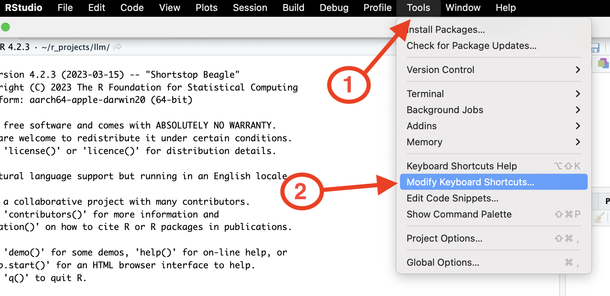
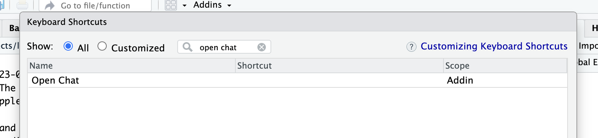

Intro
chattr is an interface to LLMs (Large Language Models). It enables interaction with the model directly from the RStudio IDE. chattr allows you to submit a prompt to the LLM from your script, or by using the provided Shiny Gadget.
This package’s main goal is to aid in exploratory data analysis (EDA) tasks. The additional information appended to your request, provides a sort of “guard rails”, so that the packages and techniques we usually recommend as best practice, are used in the model’s responses.
Install
Since this is a very early version of the package install the package from GitHub:
remotes::install_github("mlverse/chattr")Available models
chattr provides two main integration with two main LLM back-ends. Each back-end provides access to multiple LLM types. The plan is to add more back-ends as time goes by:
| Provider | Models | Setup Instructions |
|---|---|---|
| OpenAI |
GPT Models accessible via the OpenAI’s REST API. chattr provides a convenient way to interact with GPT 4, and 3.5.
|
Interact with OpenAI GPT models |
| LLamaGPT-Chat | LLM models available in your computer. Including GPT-J, LLaMA, and MPT. Tested on a GPT4ALL model. LLamaGPT-Chat is a command line chat program for models written in C++. | Interact with local models |
| GitHub Copilot | AI pair programmer that offers autocomplete-style suggestions as you code | Interact with GitHub Copilot Chat |
| Databricks | DBRX, Meta Llama 3 70B, and Mixtral 8x7B via Databricks foundational model REST API. | Interact with Databricks foundation chat models |
Using
The App
The main way to use chattr is through the Shiny Gadget app. By default, in RStudio the app will run inside the Viewer pane. chattr will prompt you to select the model back-end you with to use. The list of the actual models will depend on which of them you have a setup for. If no model setup is found, it will return an error. If you receive the error, please refer to the previous section to learn how to setup a model back-end in your machine. Here is an example of what the selection prompt will look like:
chattr::chattr_app()
#> ── chattr - Available models
#>
#> 1: GitHub - Copilot Chat - (copilot)
#> 2: OpenAI - Chat Completions - gpt-3.5-turbo (gpt35)
#> 3: OpenAI - Chat Completions - gpt-4 (gpt4)
#> 4: LlamaGPT - ~/ggml-gpt4all-j-v1.3-groovy.bin (llamagpt)
#>
#> Select the number of the model you would like to use:This prompt only occurs the first time you call chattr_app(), or chattr(). If you close the app, and open it again, the app will use the model you initially selected. The selection is set for the rest of your R session, or until you manually change it. Please note that if, for example, chattr cannot find the setup for OpenAI, then those lines would not show up as options in your actual prompt.
If you wish to avoid the interactive prompt, then call chattr_use() to designate the model you wish to use before calling the app. You can also use chattr_use() to change the model back-end you are interacting with during your R session:
chattr_use("gpt35")
chattr_app()
After the LLM finishes its response, the chattr app processes all markdown code chunks. It will place three convenience buttons:
Copy to clipboard - It will write the code inside the chunk to your clipboard.
Copy to document - It will copy-paste the code directly to where the app was called from. If the app is started while working on a script,
chattrwill copy the code to that same script.Copy to new script - It creates a new R script in the RStudio IDE, and copies the content of the chunk directly to it. Very useful when the LLM writes a Shiny app for you
A lot of effort was put in to make the app’s appearance as close as possible to the IDE. This way it feels more integrated with your work space. This includes switching the color scheme based on the current RStudio theme being light, or dark.
The settings screen can be accessed by clicking on the “gear” button. The screen that opens will contain the following:
Save and Open chats - This is an early experiment to allow us to save and retrieve past chats.
chattrwill save the file in an RDS format. The main objective of this feature, is to be able to see past chats, not to continue previous conversations with the LLM.Prompt settings - In this section you can change the additional information attached to your prompt. Including the number of max data files, and data frames sent to the LLM.

Additional ways to interact
Apart from the Shiny app, chattr provides two more ways to interact with the LLM. For details, see: Other interfaces
How it works
chattr enriches your request with additional instructions, name and structure of data frames currently in your environment, the path for the data files in your working directory. If supported by the model, chattr will include the current chat history.
chattr handles model requestsTo see what chattr will send to the model, set the preview argument to TRUE:
library(chattr)
data(mtcars)
data(iris)
chattr_use("gpt4")
#>
#> ── chattr
#> • Provider: OpenAI - Chat Completions
#> • Path/URL: https://api.openai.com/v1/chat/completions
#> • Model: gpt-4
#> • Label: GPT 4 (OpenAI)
chattr(preview = TRUE)
#>
#> ── chattr ──────────────────────────────────────────────────────────────────────
#>
#> ── Preview for: Console
#> • Provider: OpenAI - Chat Completions
#> • Path/URL: https://api.openai.com/v1/chat/completions
#> • Model: gpt-4
#> • Label: GPT 4 (OpenAI)
#> • temperature: 0.01
#> • max_tokens: 1000
#> • stream: TRUE
#>
#> ── Prompt:
#> role: system
#> content: You are a helpful coding assistant
#> role: user
#> content:
#> * Use the 'Tidy Modeling with R' (https://www.tmwr.org/) book as main reference
#> * Use the 'R for Data Science' (https://r4ds.had.co.nz/) book as main reference
#> * Use tidyverse packages: readr, ggplot2, dplyr, tidyr
#> * For models, use tidymodels packages: recipes, parsnip, yardstick, workflows,
#> broom
#> * Avoid explanations unless requested by user, expecting code only
#> * For any line that is not code, prefix with a: #
#> * Keep each line of explanations to no more than 80 characters
#> * DO NOT use Markdown for the code
#> [Your future prompt goes here]Keyboard Shortcut
The best way to access chattr’s app is by setting up a keyboard shortcut for it. This package includes an RStudio Addin that gives us direct access to the app, which in turn, allows a keyboard shortcut to be assigned to the addin. The name of the addin is: “Open Chat”. If you are not familiar with how to assign a keyboard shortcut see the next section.
How to setup the keyboard shortcut
-
Select Tools in the top menu, and then select Modify Keyboard Shortcuts

-
Search for the
chattradding by writing “open chat”, in the search box
-
To select a key combination for your shortcut, click on the Shortcut box and then type press the key combination in your keyboard. In my case, I chose Ctrl+Shift+C